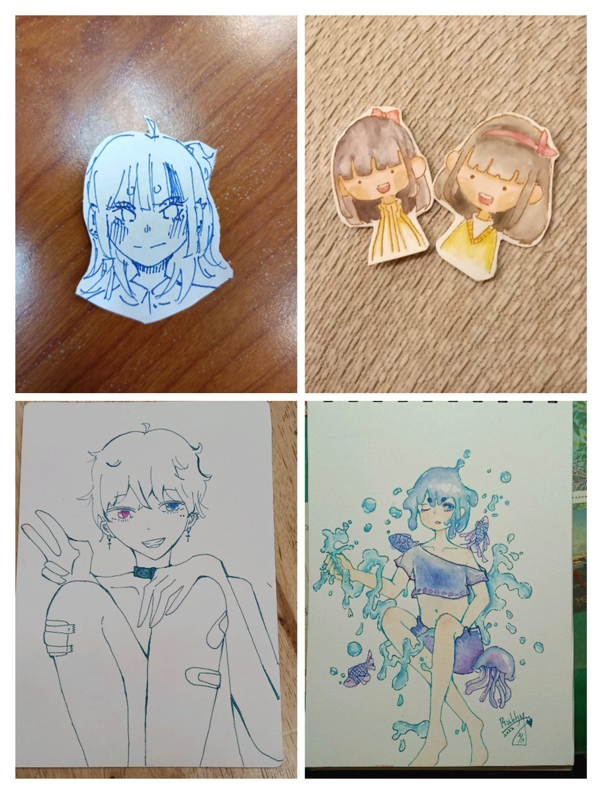
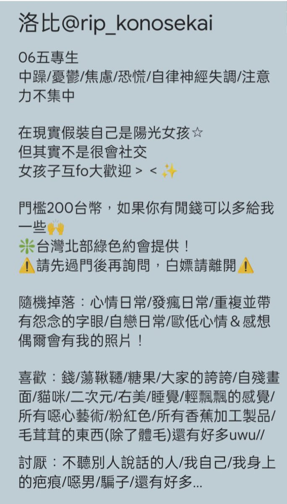

shiotelya
@shiotelya
RT @rip_konosekai: ✨自介更新✨
叫我洛比就好！
*更完整請看最後一張圖*
✦座標台灣北部
✦有線下約會 可私訊過門檻了解
✦這裡是我的情緒垃圾桶 還有各種日常 隨機掉落自拍/一些畫
✦喜歡和妹子貼貼
☆雷點:基本上是自動避雷針 除了:亂砍價/不禮貌的人/想…


☆起起洛洛洛洛比☆
@rip_konosekai
✨自介更新✨
叫我洛比就好！
*更完整請看最後一張圖*
✦座標台灣北部
✦有線下約會 可私訊過門檻了解
✦這裡是我的情緒垃圾桶 還有各種日常 隨機掉落自拍/一些畫
✦喜歡和妹子貼貼
☆雷點:基本上是自動避雷針 除了:亂砍價/不禮貌的人/想白嫖/盜圖仔/吃檳榔的人
☆可能雷你:注音文 顏文字 髒話等... https://t.co/G5jDpAeedg